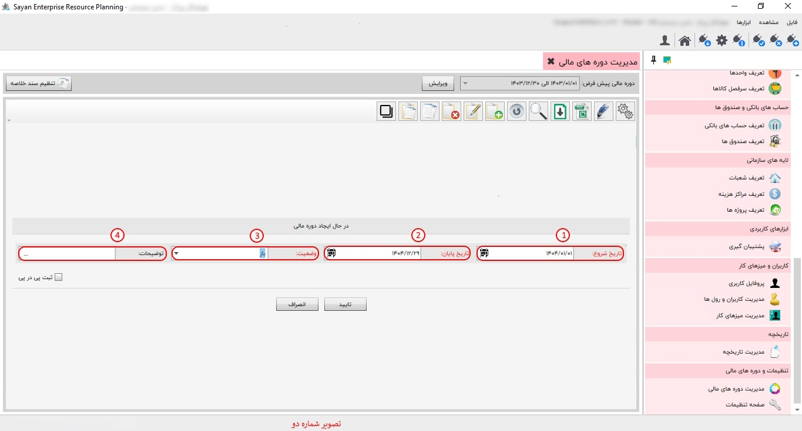

در این قسمت می توانید دوره های مالی مد نظر را معرفی نمایید و دوره مالی پیش فرض برای صدور اسناد را در نرم افزار تعیین کنید، شکل زیر صفحه مدیریت دوره های مالی را نمایش می دهد:

برای ادامه مطلب به عکس شماره دوم مراجعه نمایید.
-دوره مالی پیش فرض (کادر شماره یک) :
-کادر شماره دوم:
-تنظیم سند خلاصه(کادر شماره سوم):
برای ادامه مطلب به عکس شماره سوم مراجعه نمایید.
-تنظیم اتوماتیک (کادر شماره یک):
-برگشت از تایید(کادر شماره دوم):
-از تاریخ (کادر شماره سوم):
- (کادر شماره چهارم)تا تاریخ:
-جمع بندی (کادر شماره پنجم):
-تعداد روز(کادر شماره ششم) :